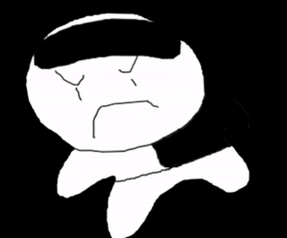

우고__ | woogoda

이 사이트는 단순 팬이 제작한 사이트이며,
쓰고 싶으면 써도 되는데 코드가 스파게티 코드이므로 재활용하기 극히 어려움을 명시합니다.
다른 자기소개 사이트가 어떻게 구성됐는지 눈팅하고 검색하면서 대충 따라만들었으므로
본직이 웹사이트 개발자이시거나 웹사이트 디자이너이신 분의 뒷목을 잡게 만들 수 있습니다.
근데 설마 'PROFILE'의 'Fan Name'에서 'Go Stone'이 '가라 돌멩이!' 같은걸로 이해한 사람은 없겠죠?
혹시나 해서 말씀드리지만 바둑이 영어로 Go 입니다.